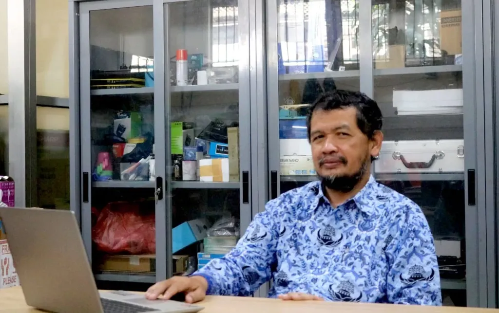

SARANA DAN PRASARANA
Eko Budi Iswanto, S.Pd
Untuk meningkatkan kualitas pelayanan kepada siswa, warga SMK Negeri 4 Malang dan warga kota Malang pada umumnya serta mengoptimalkan potensi usaha mandiri, dalam hal ini mengoptimalkan sarana dan prasarana SMK Negeri 4 Malang.
DATA SARANA PRASARANA
| No | Fasilitas | Jumlah | Keterangan |
|---|---|---|---|
| 1 | Ruang Kelas | 38 | Ruangan Non-Produktif |
| 2 | Lab. Bahasa | 2 | Bahasa Inggris dan Bahasa Indonesia |
| 3 | Lab. Simulasi Digital | 2 | |
| 4 | Lab. Produksi Grafika | 7 | |
| 5 | Lab. Persiapan Grafika | 7 | |
| 6 | Lab. Multimedia | 3 | Sekarang digunakan siswa kejuruan dkv |
| 7 | Lab. Teknik Komputer dan Jaringan | 3 | |
| 8 | Lab. Rekayasa Perangkat Lunak | 4 | |
| 9 | Lab. Animasi | 4 | |
| 10 | Lab. Mekatronika | 4 | |
| 11 | Lab. Logistik | 2 | Dengan gudang |
| 12 | Lab. Perhotelan | 1 | |
| 13 | Ruang Management | 16 | Ruang Guru, Kepala Sekolah, Waka, TU dan LSP |
| 14 | Masjid | 1 | 2 lantai |
| 15 | Perpustakaan | 1 | |
| 16 | Ruang Pameran | 1 | Berada di lantai 2 perpus |
| 17 | Technopark | 2 | |
| 18 | Lobby | 1 | |
| 19 | Hall | 3 | |
| 20 | Auditorium | 1 | |
| 21 | Home Theater | 1 | |
| 22 | Gazebo (Ruang Terbuka) | 2 | |
| 23 | Labana | 1 | Lapangan serbaguna |
| 24 | Ruang Fitnes | 1 | |
| 25 | UKS | 1 | |
| 26 | Lab. PKK | 1 | |
| 27 | Teaching Factory | 2 | |
| 28 | Bank Mini | 1 | |
| 29 | Kopsis | 1 | |
| 30 | Kantin | 10 | |
| 31 | Parkiran | 5 | |
| 32 | Sanitasi | 6 | Laki-laki dan Perempuan |
| 33 | Ruang Musik | 1 | |
| 34 | Ruang Karaoke | 1 | |
| 35 | Ruang Network Operation Center | 1 |